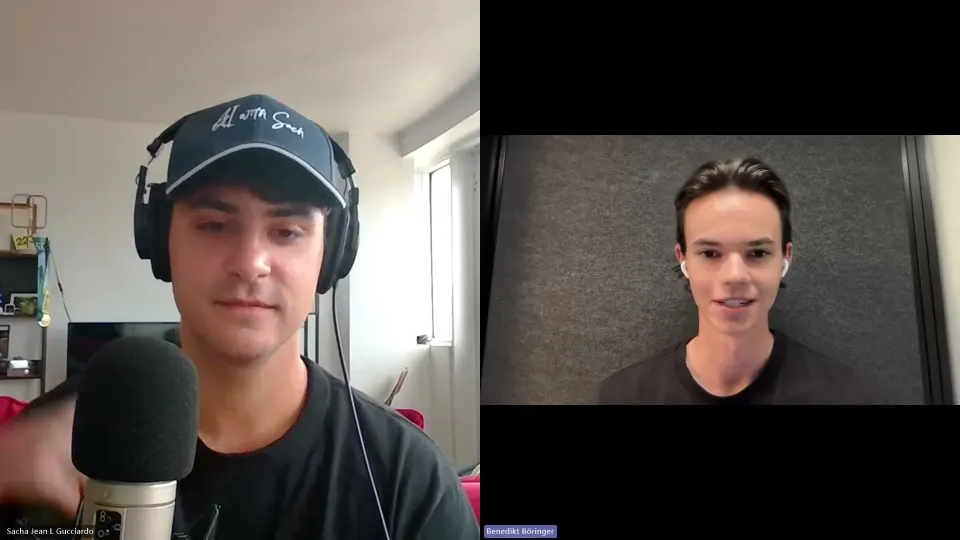
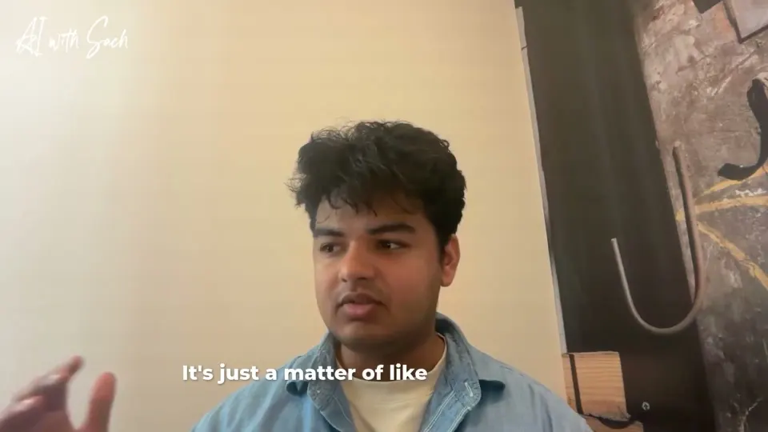
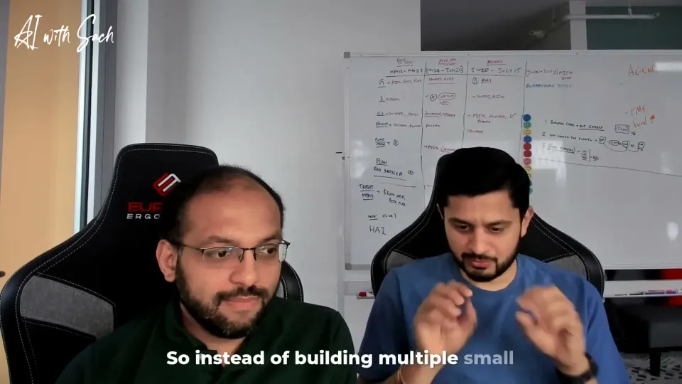
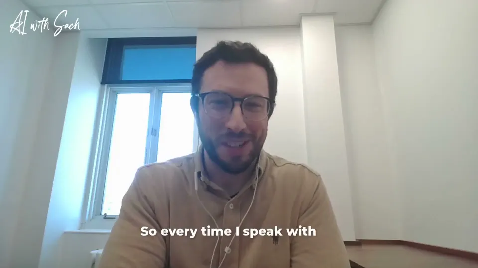
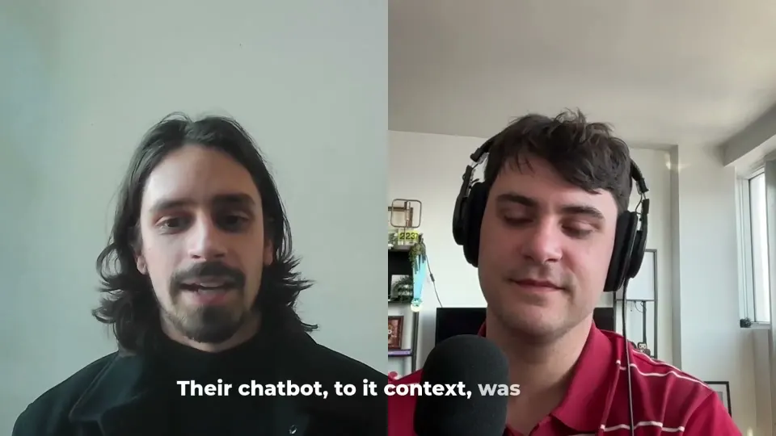

Theme
Build What's Needed
Founders and investors share how to validate before building, iterate on real pain, and stay modular while AI shifts under them.
Episodes on this theme

How to Reclaim Your Time with Jamie, the AI-Powered Meeting AssistantBenediktCo-founder of Jamie, an AI meeting assistant (previously co-founder of TeamTap)
Watching Users So You Don’t Have To: Human Behavior, YC, and AIAmogh ChaturvediCo-founder, Human Behavior (Y Combinator batch; Stanford dropout)
Building Cactus: AI That Actually Helps SolopreneursAvinash, AjithCo-founder and technical lead, Cactus (Y Combinator batch) · Co-founder, Cactus (Y Combinator batch); previously co-founder of Turing Labs
Investing in AI and Impact: Building Resilient Startups in QuebecCédric BeaudoinSenior Associate, impact and technology investing, Investissement Québec (IQ)
L'IA au service de la Cybersécurité avec son Co-fondateur Jean-SébastienJean-SébastienCo-fondateur de Fireraven, startup montréalaise de cybersécurité pour l'IA; ancien co-fondateur et CTO de Quotes-n-Go QuébGPT : Révolutionner les PME avec l’IA – ft Charles DemontignyCharles DemontignyFondateur de QuébGPT (anciennement Fluxion Conseil), créateur du chatbot Capture
QuébGPT : Révolutionner les PME avec l’IA – ft Charles DemontignyCharles DemontignyFondateur de QuébGPT (anciennement Fluxion Conseil), créateur du chatbot CaptureIn their words
Don't start building until someone has signed a contract or paid you.
you should not build until you've talked to a bunch of people until you have like already like validation through like contracts or money that people want to buy this thing. And yeah, I think that's like the biggest thing.Amogh Chaturvedi
His advice to someone going from startup idea to execution, with a disclaimer that he has not built a big company yet.
The strongest proof your product idea works: someone paid before you built it.
And second option is then if the product, for example, takes longer to develop, to sign contracts actually before that. Because if people put money down for the product that you plan to build, that's the biggest validation that you can get.Benedikt
Benedikt gives his second way to validate a product idea when building it takes a long time.
With AI, you can build almost anything. Knowing what to build is the hard part.
I think the hardest piece has been actually finding what exactly is it that our customers need. Again, not what, need. So what is it that our customer, what is it that we can provide to our customers that gives them a lot of value? I think that has been more harder than actually building it because these days with AI, you can literally build anything.Avinash
Asked which part of the product was hardest, Avinash says it was deciding what to build, not building it.
Before building anything, we begged for calls. A hundred product people said yes.
The way we validated was just beg for calls. Just like, please talk to us. Please talk to us. I think even before we decided to build even a fraction of the product, we talked to over a hundred people easily who were not just like random people.Amogh Chaturvedi
How the team validated the idea before writing much product code.
Build so you can unplug your AI model in six weeks and plug in a better one.
it's it's probably having something that is modular in some way where there's a pieces that is is going to plug into your software that's going to be make it a lot more efficient but if at some point something else comes up like six weeks six months later you can just unplug that and plug something else rightCédric Beaudoin
Cédric explains how vertical AI startups can build a lasting advantage when models keep changing.
If you build for investors instead of users, you have already lost.
Yeah, I have a controversial answer to this as well, which is don't build AI tools for or tools in general. If you're optimizing for investors and not talking to users, I think you as a founder have already lost, unfortunately.Avinash
Avinash answers what investors look for in AI tools for small businesses.